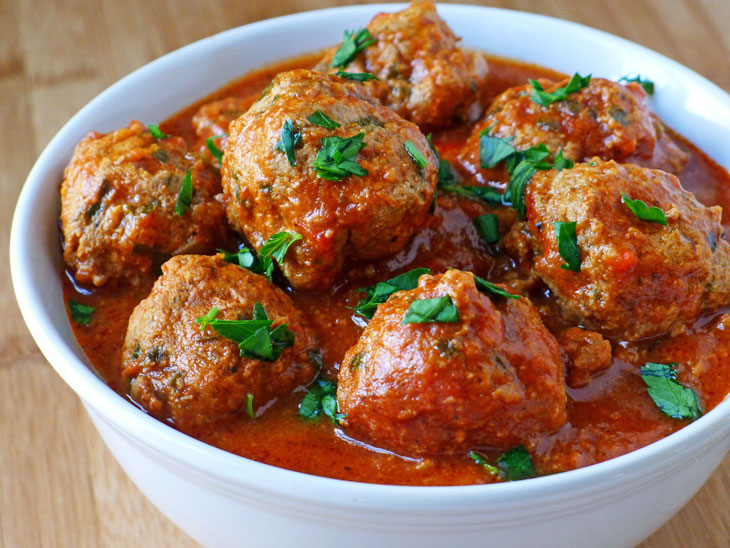

Meatballs

Description
The ancient Roman cookbook Apicius included many meatball-type recipes.
Early recipes included in some of the earliest known Arabic cookbooks
generally feature seasoned lamb rolled into orange-sized balls and
glazed with egg yolk and sometimes saffron.
Poume d'oranges is a gilded meatball dish from the Middle Ages.
Ingredients
- 1 pound ground beef
- ½ pound ground veal
- ½ pound ground pork
- 1 cup freshly grated Romano cheese
- 2 eggs
- 2 cloves garlic, minced
- 1 ½ tablespoons chopped Italian flat leaf parsley
- salt and ground black pepper to taste
- 2 cups stale Italian bread, crumbled
- 1 ½ cups lukewarm water
- 1 cup olive oil
Steps
- Gather all ingredients.
- Combine beef, veal, and pork in a large bowl. Mix in cheese,
eggs, garlic, parsley, salt, and pepper.
- Add bread crumbs and slowly mix in water, 1/2 cup at a time,
until mixture is moist but still holds its shape (I usually
use about 1 1/4 cups of water); shape into meatballs.
- Heat olive oil in a large skillet over medium heat. Add meatballs
in batches, spacing them slightly apart so they brown instead of
steam. Cook, turning occasionally, until evenly browned on all
sides, slightly crisp on the outside, and cooked through in the
center, about 10 to 15 minutes. An instant-read thermometer inserted
into the center should read 160 degrees F (71 degrees C). Drain on
paper towels.
- Enjoy!
Home